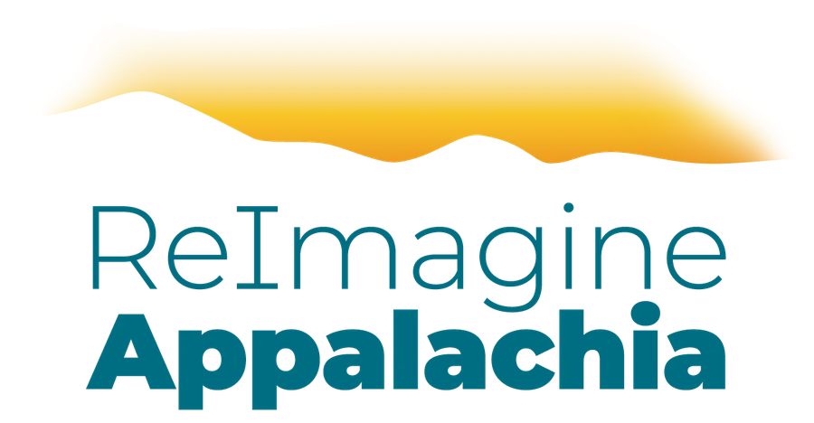

| Summer 2026 Manufacturing Roadshow ReImagine Appalachia | American Manufacturing Communities CollaborativeTransforming North Central Appalachia into a global leader for sustainable manufacturing.
To revitalize North Central Appalachia by building on its industrial heritage to create a 21st-century hub for modernized, sustainable, and equitable manufacturing. A-MAP serves as a roadmap to ensure clean energy economy opportunities benefit local workers and communities — rather than extracting wealth and leaving pollution behind.
Primary metals, fabricated products, chemicals.
Proximity to consumer markets and research institutions.
Deep base of manufacturing & trades workers.
Carbon-friendly rail/waterway access, shuttered coal & steel sites.
Coal ash, acid mine drainage, hemp, sorghum.
Producing products for the clean energy economy.
Optimizing and increasing commercial sales.
Transform shuttered coal plants and brownfields into eco-industrial parks.
Reduce industrial emissions through electrification and efficiency.
Sustainable procurement and buying local.
Leveraging strengths in low-carbon materials like mass timber and green concrete.
Expanding union apprenticeships and ensuring strong labor standards.
Utilizing biofeedstocks for bioplastics and single-use alternatives.
Connecting communities with private and public investors.
A regional framework to support advanced manufacturing and community benefits.
Bring your voice, ideas, and energy to a collective vision and implementation plan for the Ohio River Valley region of Appalachia — coal country — becoming a hub for 21st-century manufacturing. As a roadshow participant, you'll help:
This isn't going to happen overnight. Here's the roadmap for the year ahead:
Multi-stakeholder, multi-state — helping guide the path forward.
Incorporating feedback gathered across the roadshow stops.
Building a wider coalition of support behind A-MAP.
Turning the plan's priorities into concrete policy asks.
Date TBD — a closing summit to review the finalized plan.